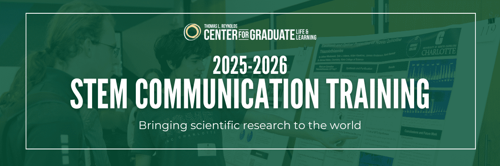

We are thrilled to offer a second year of our highly successful STEM communication training program, designed for students passionate about enhancing their ability to effectively convey complex scientific ideas to diverse audiences.
About the Program
This program is designed to equip participants with the necessary skills to articulate STEM concepts clearly and engagingly. Whether pursuing a Master's or PhD in the sciences, engineering, computer science, data science, mathematics, education, communication studies or any other field, students from all disciplines are eligible to participate. The effectiveness of this training is being evaluated through an NSF-funded research study (NSF IGE award #2325453, IRB-24-0530).
Learning Outcomes
Throughout the program, participants will delve into various aspects of STEM communication, including:
- Simplifying complex STEM topics for diverse audiences
- Delivering STEM presentations with clarity and enthusiasm
- Writing about STEM subjects for public consumption
- Utilizing multimedia tools like videos and data visualizations for effective communication
- Combating misinformation in the scientific realm
- Navigating cross-cultural and interdisciplinary communication challenges
Feedback from the 2024-2025 Program
Whether this is with a dean of the college, a future colleague, or a stranger on the street with no knowledge of my work, I feel more confident in my ability to choose my approach to sharing my work appropriately with the given audience.
This training didn't just sharpen my communication skills but even it reshaped the way I think about my role as a scholar and communicator...These skills make me not just a better job candidate, but a more responsible and adaptive professional especially in an era where trust in science and clarity in communication are more important than ever.
Before, I wasn't sure how to present complex ideas in simple ways without losing accuracy, but this course gave me tools and examples that made it feel doable....It feels good to know that what I'm working on could actually make sense and matter to people outside the lab.
Program Structure:
The program will span the entire 2025-26 academic year and will consist of:
- 5 to 6 STEM Communication Canvas modules and associated assignments (~12 hours per module, asynchronous).
- Workshops with industry experts (1-2 workshops per module, ~1 hour each).
- 2 showcase events to demonstrate your newfound skills to the public and industry representatives (~4 hours total).
- Participants will receive $300 upon successful program completion.
| Course | Date | Course Creator |
|---|---|---|
| 1. Cognitive Theories of Communication | August 25 – September 21, 2025 | Dr. Doug Markant, University of North Carolina Charlotte |
| 2. Talking About STEM Outside the Academy | September 22 – October 26, 2025 | Gabor Zsuppan, Senior Director for STEM and Museum Experiences; and Michelle Page, Biomedical Science Program Lead, Discovery Place Museums |
| 3. Effective STEM Communication Across Cultures and Disciplines | October 27 – November 23, 2025 | Dr. Sandeep Ravindran, Science Journalist |
| 4. Effective STEM Writing for Expert and General Audiences | January 12 – February 8, 2026 | Angela Chen, Senior Editor at Vox |
| 5. Creating Effective STEM Visuals and Videos | February 9 – March 8, 2026 | Tom McNamara, film producer, documentarian, and writer |
| 6. Fighting Science Misinformation on Social Media (and Beyond) | March 16 – April 12, 2026 | Dr. Melanie Trecek-King, professor and creator of Thinking is Power |
Interested in Bringing this Content to Your Campus?
We are freely sharing the STEM Communication Training course materials to other colleges & universities. Please use this inquiry form to contact the project team.